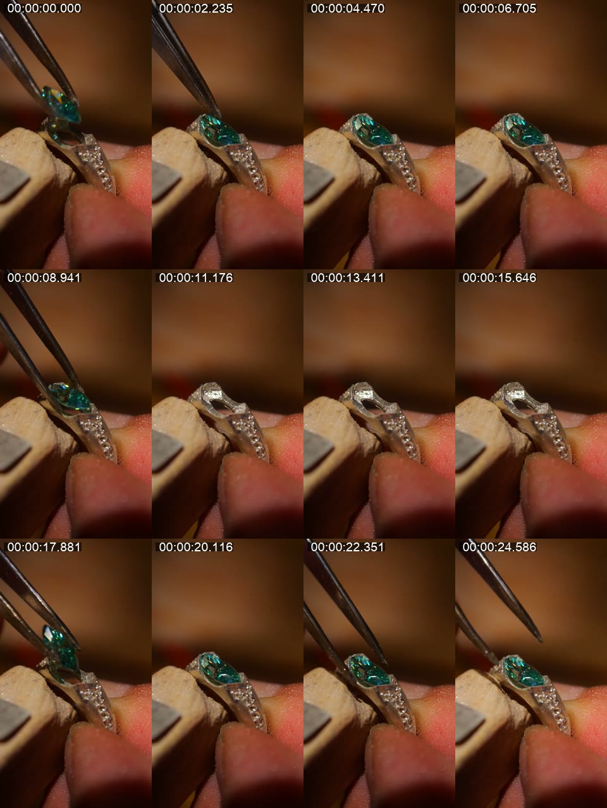
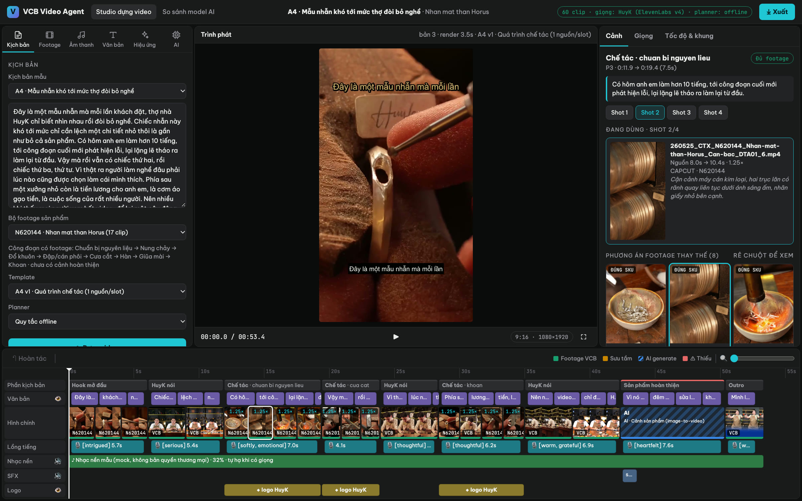
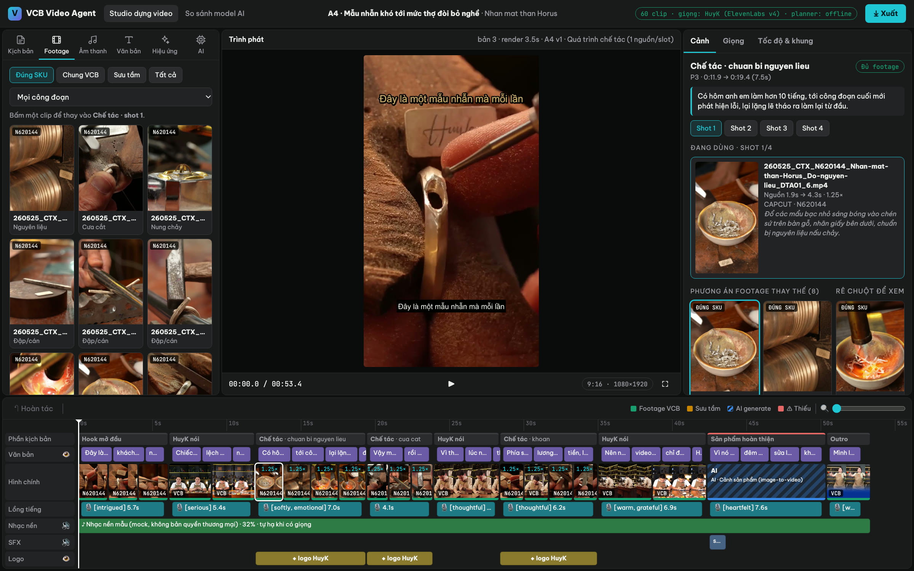
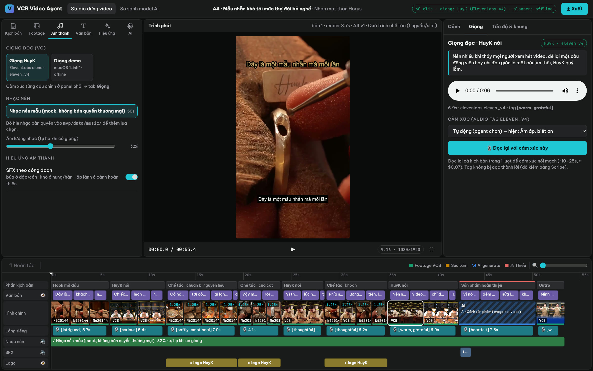
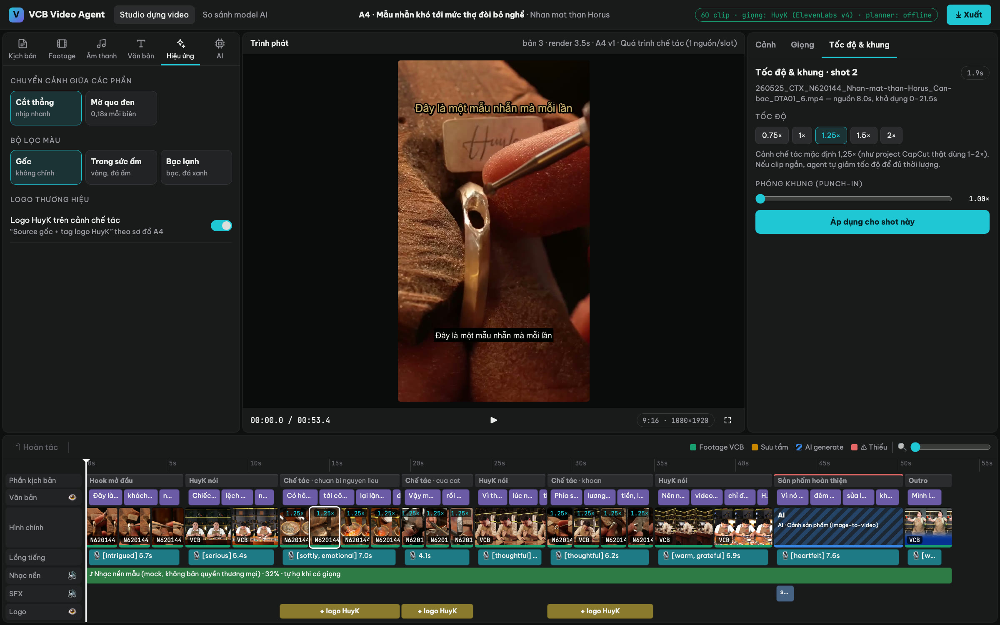
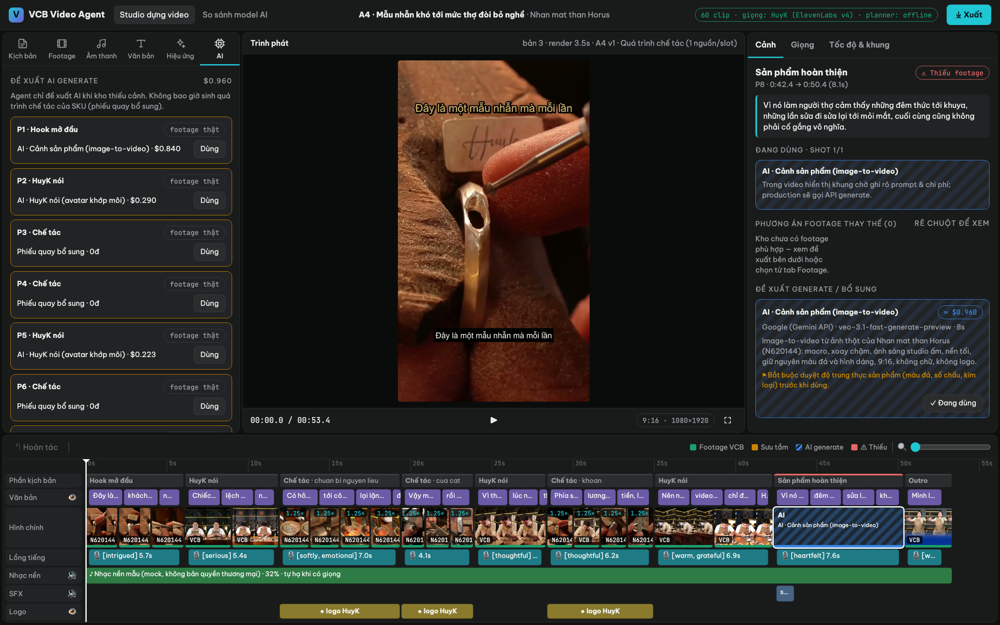
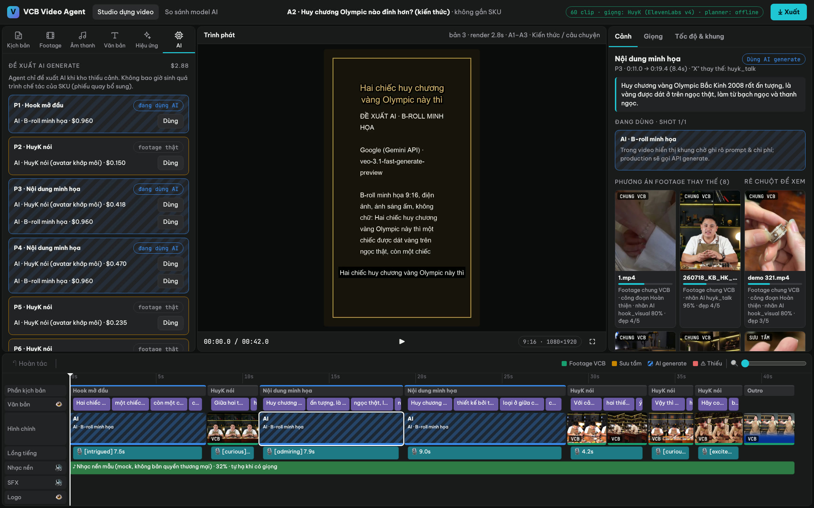
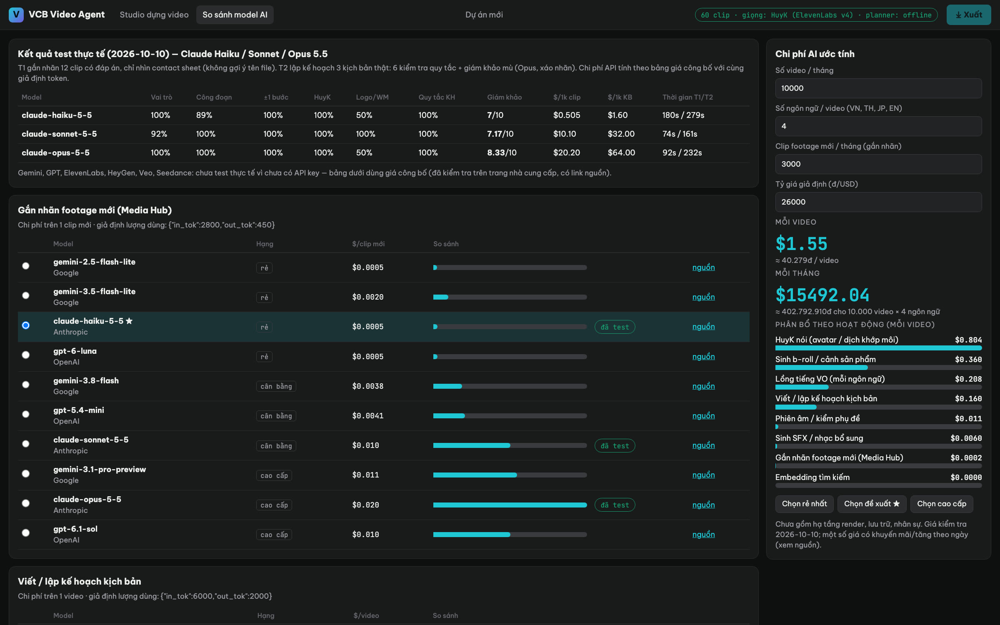

Agent tự chọn footage trong kho, cắt, ghép, lồng giọng HuyK, nhạc, SFX và chữ thành video hoàn chỉnh.
Con người không dựng nữa, chỉ duyệt và định hướng.
Toàn cảnh một trang · footage đi đâu · agent đọc kịch bản, chọn cảnh, lồng giọng ra sao · thiếu cảnh thì làm gì · người duyệt đứng ở đâu.
Ảnh chụp thật của Studio (giao diện kiểu CapCut) và giải thích từng vùng, từng nút: thư viện, trình phát, thuộc tính, timeline, xuất file.
Việc đội dev hoàn thiện · kiến trúc · 10.000 video/tháng với đội 100 người · ngày càng thông minh · chi phí · lộ trình.
Kho NAS "Thương hiệu": ~49.000 file; riêng Kim hoàn có 38.000+ video chế tác, HuyK, sản phẩm.
Dựng tay một video 45–60s. Project CapCut mẫu: 33 cut, 1,8 giờ chỉnh.
Editor toàn thời gian cần nếu dựng tay 10.000 video/tháng.
Chênh view giữa video tốt (2,9M · 2,6M · 1M) và video kém (5–6 nghìn), dù dùng cùng một kho.
Không thiếu tư liệu. Thiếu một hệ thống khai thác kho theo công thức đã thắng, nhân bản ra nhiều ngôn ngữ, và học từ kết quả để lần sau tốt hơn.
Từng bước bằng sơ đồ: toàn cảnh → nạp footage → agent hiểu clip → hành trình một kịch bản → chọn cảnh → khi thiếu cảnh → giọng HuyK → người duyệt
18/08/2026 → độ mới
Chế tác · gắn đá chủ (bước 10/13)
HuyK
N0017 → không ghép nhầm SKU
~70–80% thông tin có ngay từ tên file và thư mục. Hub chạy trên máy chủ cạnh NAS, gánh phần đọc/ghi nặng; dây chuyền dựng chỉ gọi API "tìm cảnh" của Hub.

Contact sheet 12 khung hình (có mốc giây) của clip Gắn đá chủ · N0017, dài 26,8s. AI chỉ xem bản nhẹ này, không xem file gốc.
| Vai trò | Chế tác (90%) · cận cực gần (80%) |
| Công đoạn | Gắn đá chủ, đọc từ tên file ✓ |
| Có HuyK? | Không · thấy tay thợ, nhíp, đá, sản phẩm |
| Sản phẩm | Nhẫn bạc, đá xanh lá |
| Độ đẹp | 5/5 · khoảnh khắc đẹp nhất ở giây 22,4 |
| Mô tả | "Dùng nhíp đặt viên đá xanh lá vào ổ chủ trên nhẫn bạc, cận cực gần, nền nâu mờ đẹp." |
Claude Haiku 5.5: 100% đúng vai trò · 89% đúng công đoạn (100% nếu cho lệch 1 bước) · 100% nhận ra HuyK · ≈ $0,5 / 1.000 clip.
Xanh lá = footage chế tác thật đúng SKU (tăng tốc 1,25× như project mẫu) · be = HuyK · xanh dương = kho chưa có cảnh hoàn thiện của N620144 → agent đề xuất sinh bằng Veo.
Trong sơ đồ của VCB, "X" nghĩa là các nguồn thay thế được cho nhau (vd HuyK nói hoặc cận tay thao tác). Agent chọn phương án điểm cao nhất; người duyệt đổi sang phương án kia bằng một cú bấm.
Không lặp clip trong một phần · dùng lại ở phần khác thì lấy đoạn khác · cắt quanh "khoảnh khắc đẹp nhất" AI đã đánh dấu.
B-roll AI tối đa 30% thời lượng, không hai cảnh AI liền nhau · mọi asset AI đạt chuẩn được nạp lại kho → sinh một lần, dùng nhiều lần · gắn nhãn "AI-generated" khi đăng theo luật nền tảng.
| [intrigued] | "Đây là một mẫu nhẫn mà mỗi lần khách đặt…" |
| [softly, emotional] | "…lại lặng lẽ tháo ra làm lại từ đầu." |
| [warm, grateful] | "…một cái tim thôi, HuyK quý lắm." |
| [heartfelt] | "…cuối cùng cũng không phải cố gắng vô nghĩa." |
| [warm, confident] | "Mình là HuyK đến từ Viễn Chí Bảo." |
Có ngay MP4 dùng được + phụ đề. Không cần mở phần mềm dựng.
Mục tiêu ≥ 70% video
Đổi cảnh, nhạc, cảm xúc giọng, tốc độ… ngay trong Studio. Agent dựng lại trong vài giây.
~20% video
Cần sửa sâu: Xuất project CapCut nhiều track (video, giọng, nhạc, SFX, chữ) để sửa trực tiếp.
~10% video
Chọn lý do: hook yếu, sai cảnh… Lý do trở thành dữ liệu dạy hệ thống.
Ít dần theo thời gian
Chỉ khi có thông tin sản phẩm mới, câu chuyện mới hoặc bản dịch mới. Một kịch bản duyệt → hàng chục video.
Sai SKU · footage chưa rõ quyền · claim không có nguồn · lỗi âm thanh · phụ đề sai tên riêng hoặc số.
Studio dựng video kiểu CapCut · 60 clip thật của VCB · giọng HuyK thật · mọi nút trong ảnh đều bấm được

Tên dự án · tab "So sánh model AI" · trạng thái giọng & planner · nút Xuất
Kịch bản · Footage · Âm thanh · Văn bản · Hiệu ứng · AI
Xem video đã dựng · phát/dừng (phím Space) · mốc thời gian · toàn màn hình
Cảnh · Giọng · Tốc độ & khung của phần đang chọn
Phần kịch bản · chữ · hình · giọng · nhạc · SFX · logo · hoàn tác · zoom
Kịch bản: chọn kịch bản mẫu hoặc dán kịch bản mới · chọn bộ footage sản phẩm (hiện sẵn các công đoạn có cảnh) · template A1–A4 · planner · nút Dựng video.

Footage: duyệt kho theo Đúng SKU / Chung VCB / Sưu tầm và theo công đoạn · bấm một clip để thay vào shot đang chọn (vẫn chặn map chéo SKU).

Âm thanh: giọng HuyK clone hoặc giọng demo · chọn nhạc nền (thêm nhạc bản quyền VCB vào thư mục là có lựa chọn mới) · âm lượng nhạc · bật/tắt SFX.

Hiệu ứng: chuyển cảnh Cắt thẳng / Mờ qua đen · màu Gốc / Trang sức ấm / Bạc lạnh · logo HuyK. Tab Văn bản: phụ đề, kiểu chữ, câu hook. Tab AI: xem slide 20.
Cảnh
Giọng
Tốc độ & khung
Clip đang dùng (đoạn nguồn, tốc độ, mô tả AI) · chọn shot 1/2/3 trong phần · 8 phương án thay thế có điểm và lý do (vd "✓ công đoạn Khoan · nhãn AI 95% · đẹp 4/5") · rê chuột để xem trước · đề xuất generate kèm chi phí và luật an toàn.
Nghe lại câu của phần này · thấy tag cảm xúc agent đã chọn · đổi sang 11 cảm xúc khác (tò mò, trầm ngâm, xúc động, biết ơn, hào hứng…) rồi bấm Đọc lại bằng giọng HuyK.
Tốc độ 0,75× đến 2× (cảnh chế tác mặc định 1,25× như project thật) · phóng khung 1,0–1,4× để lấy cận chi tiết.
lùi lại từng thao tác
xanh lá: footage VCB · vàng: sưu tầm · sọc xanh dương: AI · đỏ: thiếu
phóng to để chọn shot ngắn
vạch đỏ trên đầu: phần này kho thiếu cảnh
ẩn phụ đề, tắt nhạc, tắt SFX, ẩn logo ngay đầu track (khung vàng)
mã SKU ở góc · "1.25×" là đã tăng tốc · viền trắng là shot đang chọn
chỗ sẽ dùng cảnh AI (Veo); trong video là khung chờ ghi prompt
mỗi câu một khối, ghi tag cảm xúc và độ dài
tên bài, âm lượng, tự hạ khi có giọng; SFX lấp lánh; logo trên cảnh chế tác

Tab AI: mọi phần có đề xuất generate, giá từng phương án, nút Dùng. Chế tác thiếu cảnh → phiếu quay bổ sung 0đ.
"Sản phẩm hoàn thiện" ⚠ thiếu footage: N620144 chưa có cảnh này → đề xuất Veo từ ảnh thật ≈ $0,96, kèm luật bắt buộc duyệt.

Video kiến thức "Huy chương Olympic": kho không có hình huy chương → agent chọn b-roll minh họa AI. Khung chờ trong video ghi rõ nhà cung cấp, prompt, chi phí để duyệt trước khi tốn tiền.
Video đã dựng, phụ đề, nhạc tự hạ khi có giọng, chuẩn âm lượng mạng xã hội (−14 LUFS). PASS là dùng ngay.
File zip: MP4 + phụ đề SRT + timeline.json (shot, file nguồn trên NAS, điểm cắt, tốc độ, giọng, SFX, cấu hình) + giọng từng câu.
Project nhiều track mở được trên CapCut 9.3 Windows (tài khoản Pro), dựng từ chính timeline.json. Đã phân tích cấu trúc project thật của VCB.
Vì dùng chung một timeline, mở CapCut ra sẽ thấy đúng như video đã xem trong Studio.

Haiku / Sonnet / Opus 5.5 trên 12 clip có đáp án và 3 kịch bản thật, có giám khảo chấm mù.
Gắn nhãn · kịch bản · giọng · phiên âm · avatar · b-roll · SFX/nhạc · tìm kiếm. Giá kiểm tra 10/10/2026, có link nguồn.
Nhập số video, số ngôn ngữ → ra chi phí mỗi video và mỗi tháng. Nút nhanh Rẻ nhất · Đề xuất · Cao cấp.
Việc đội dev hoàn thiện · kiến trúc · đa ngôn ngữ · 10.000 video/tháng · đội 100 người · ngày càng thông minh · chi phí · lộ trình
| Hạng mục | MVP đã có (chạy thật) | Đội dev hoàn thiện |
|---|---|---|
| Kho footage | 60 clip mẫu, AI gắn nhãn một lần | Media Hub cạnh NAS: Upload Portal, index liên tục 38k+ clip, hàng duyệt nhãn |
| Lập kế hoạch | Quy tắc offline + adapter Claude sẵn sàng | Bật Claude Opus 5.5, kiểm tra giữ nguyên văn, facts sản phẩm (Product Master) |
| Giọng HuyK | ✓ ElevenLabs eleven_v4, clone thật, có cảm xúc | Professional Voice Clone · từ điển phát âm · TH / JP / EN |
| Chọn cảnh & dựng | ✓ Lọc cứng + chấm điểm, render MP4 ~4s | Thêm template, nạp nhạc bản quyền VCB, chống lặp giữa video và kênh |
| Thiếu cảnh | Đặc tả + chi phí + khung chờ trong video | AI Asset Studio gọi Veo / Seedance / HeyGen thật, tự chấm, người duyệt |
| Xuất | ✓ MP4 + gói timeline.json | Adapter CapCut 9.3 Windows (PoC 10 project) |
| Người dùng | Một máy, chưa có đăng nhập | Phân quyền cho đội 100 người, tự chia việc, hiệu chuẩn người duyệt |
| Học từ kết quả | Lưu lịch sử thao tác (hoàn tác) | Nhập số liệu sau đăng → điều chỉnh chọn cảnh, hook, nhạc |
Mọi model AI gọi qua một lớp "model gateway" → đổi nhà cung cấp không phải sửa dây chuyền. Mỗi bước lưu kết quả + checksum → sửa một phần chỉ chạy lại phần đó.
Theo công thức viral đã thắng + facts sản phẩm
Đổi hook, bộ cảnh thân, nhạc, công thức A4 v1/v2/v3. Cùng một chất giọng HuyK ở mọi ngôn ngữ, phụ đề đúng font từng nước.
Bằng chứng từ dữ liệu VCB: video top đến từ VN (TikTok 2,9M), TH (Facebook 2,6M), JP (Instagram 1M). Project mẫu đã dùng giọng HuyK tiếng Nhật.
Mỗi biến thể khác ≥ 2/4 trục: góc kể, hook, bộ cảnh, nhạc. Cộng thêm góc kể mới từ kho viral.
38.000 video × ~2–3 shot = ~100.000 shot
10.000 video × ~25 shot = 250.000 lượt dùng/tháng → mỗi shot ~2,5 lần/tháng, rải nhiều kênh, có thời gian chờ 30 ngày mỗi kênh.
10.000/tháng = ~333 video/ngày
MVP render một video bản xem 720p trong ~4 giây. Bản 1080p production: 3 máy render, đã tính dư ×3 cho bản xem thử và sửa.
Máy không phải giới hạn. Giới hạn thật là số phút người duyệt, và đó là việc của slide tiếp theo.
1 người = 6 giờ hữu ích × 22 ngày = 132 giờ/tháng. Phút CapCut = 3 × phút sửa nhanh. Dựng tay = 60 phút/video.
+ cố định: 1 editor lead, 1 người duyệt sản phẩm/claim, người bản ngữ duyệt kịch bản TH/JP/EN theo kịch bản (bán thời gian).
Phân bổ gợi ý cho 10.000 video/tháng, 4 ngôn ngữ. VCB tự quyết.
≈ 18.000 video/tháng năng lực duyệt (3,5 phút/video). 10k chỉ dùng hơn một nửa.
Mà là kho footage và số kênh phân phối → nhóm lớn nhất đặt ở Media Hub: quay đúng cảnh còn thiếu.
Mới: xem 100% · đã chứng minh: xem 30–50% · ổn định: xem mẫu 20%. Có lỗi nghiêm trọng → quay về 100%.
■ Tỷ lệ PASS ngay, không cần sửa. Đi kèm: phút duyệt mỗi video giảm từ ~4 xuống ~2, tỷ lệ phải mở CapCut dưới 5%.
Mọi thay đổi do học đều có phiên bản, được kiểm trên bộ video chuẩn trước khi áp dụng, và quay lui được.
≈ $3,4K · $15,5K · $27K mỗi tháng. Chưa gồm hạ tầng render, lưu trữ, nhân sự.
Đòn bẩy tiết kiệm số 1: dùng clip HuyK thật nhiều hơn avatar.
| Giai đoạn | Thời gian | Kết quả | Sản lượng |
|---|---|---|---|
| ✓ MVP demo | Đã xong | Studio kiểu CapCut · 60 clip · giọng HuyK eleven_v4 · báo cáo model AI | 6 kịch bản mẫu |
| 0 · PoC CapCut | Tuần 1 | Xuất project CapCut 9.3 Pro trên Windows · nhập dữ liệu 10 SKU | 10 project |
| 1 · Media Hub | Tuần 2–3 | Upload Portal · index kho thật · duyệt nhãn · API tìm cảnh | — |
| 2 · Dây chuyền lõi | Tuần 4–5 | Claude planner · nhạc bản quyền VCB · đủ template · QC tự động | Lô 20 video |
| 3 · Người duyệt + CapCut | Tuần 6–7 | Phân quyền đội · tự chia việc · adapter CapCut | Dùng hằng ngày |
| 4 · AI Studio + đa ngôn ngữ | Tuần 7–8 | Veo · HeyGen · giọng TH / JP / EN | — |
| 5 · Pilot | Tuần 9–10 | 100 video + 20 ca lỗi cố ý · đo phút công, chi phí, tỷ lệ PASS | 100 video |
| 6 · Tăng tốc | Tháng 3 → 6 | Duyệt theo độ tin cậy · học từ số liệu sau đăng | 1k → 5k → 10k / tháng |
| Phút công / video đạt chuẩn | Giảm 80–90% so với dựng tay |
| Sai SKU / claim / quyền lọt qua | 0 |
| PASS ngay ở pilot | ≥ 50%, tăng dần lên ≥ 70% |
| Project CapCut mở được | 100% video được xuất |
| Điểm biên tập (hội đồng 3 người) | ≥ 4/5: đúng HuyK, nhịp tốt, hình–lời khớp |
| Footage mới sẵn sàng | ≤ 24 giờ |
Đã chốt: CapCut 9.3 Windows Pro · "X" = nguồn thay thế · slot HuyK = HuyK nói (thật/AI) · được dùng footage sưu tầm · mỗi sản phẩm một bộ footage, không map chéo · Media Hub tách riêng · kho nhạc bản quyền riêng · đội ~100 người
Demo Studio cho đội VCB · HuyK duyệt giọng · chọn 10 SKU
PoC xuất project CapCut 9.3 · dựng máy chủ Media Hub
Pilot 100 video · quyết định tăng tốc lên 10k/tháng